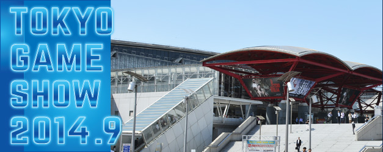

- BUSINESS DAY
- September 18(Thu) - September 19 (Fri)
- PUBLIC DAY
- September 20(Sat) - September 21 (Sun)
- Venue
- Makuhari Messe

To Exhibit
What’s New
MORE- 2014.05.28
- 2014.05.23
The Main Visual Unveiled / Application for exhibit booth accepting until May 30 (Fri)
- 2014.05.10
- 2014.03.03
- 2014.02.28